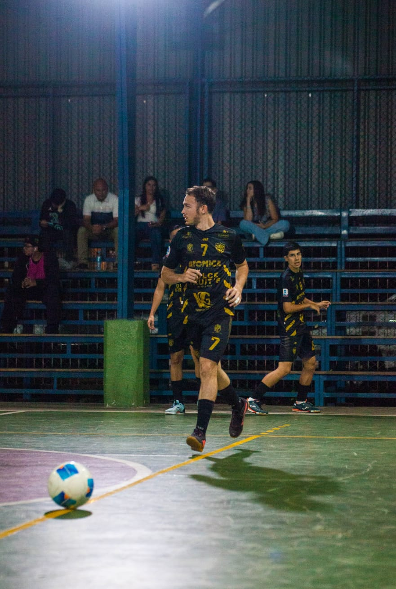

DESARROLLADOR
Jarod Thomas Delgado Carranza
Estudiante y desarrollador interesado en la programación, el desarrollo de aplicaciones y la creación de soluciones digitales.
En BUSUCR participa en el desarrollo de la interfaz, estructura y funcionamiento de la plataforma.
HTML
CSS
Java
JavaFX
Git
Ver portafolio
→